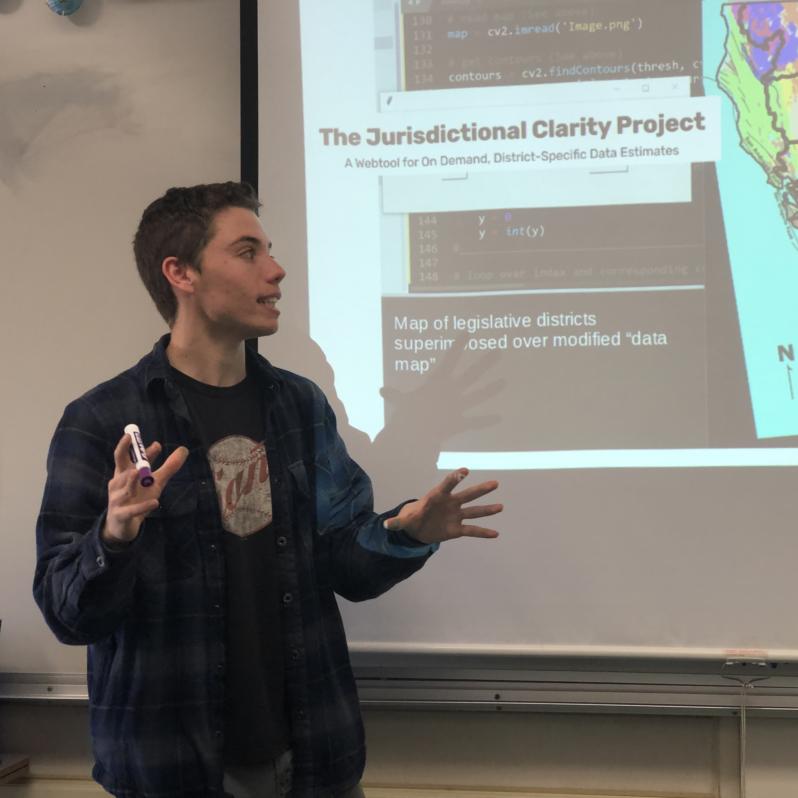

My name’s Ryan! I'm a high school senior interested in the intersection of science and public policy.
In keeping with a long tradition of teenagers inventing things in California garages, I’ve 3D printed heat shields, fought the spread of fake news online, and tried to make microgravity drop towers obsolete. Along the way, I’ve picked up awards at state and international science and engineering fairs (CSEF and ISEF, respectively).
 I’m currently lobbying for an amendment to California’s Constitution which would allow 17-year-olds to participate in primary elections if we'll be at least 18 by the corresponding general election. In 2019, I published op-eds making the case for the bill (ACA 4) in The Sacramento Bee and the Los Angeles Times, and was later featured in a piece on the issue in The New York Times.
I’m also working on what I call The Jurisdictional Clarity Project, a webtool designed to address the lack of district-specific data on issues like sea level rise and wildfire risk. The goal of the project is to illuminate a blind spot that I first encountered as an intern in the office of my state assemblymember.
My current project, The Jurisdictional Clarity Project, is my first real attempt at computer programming— the idea was just too enticing to pass up. I spent a few months learning enough Python to cobble a prototype together, and now I'm teaching myself HTML/CSS so that I can transform that prototype into a bona fide webtool, and expand from there.
For now, the rest of this site is sort of a web development learning sandbox. rybeam.com will serve as an all-in-one platform for any projects or writing that could benefit from an online presence.